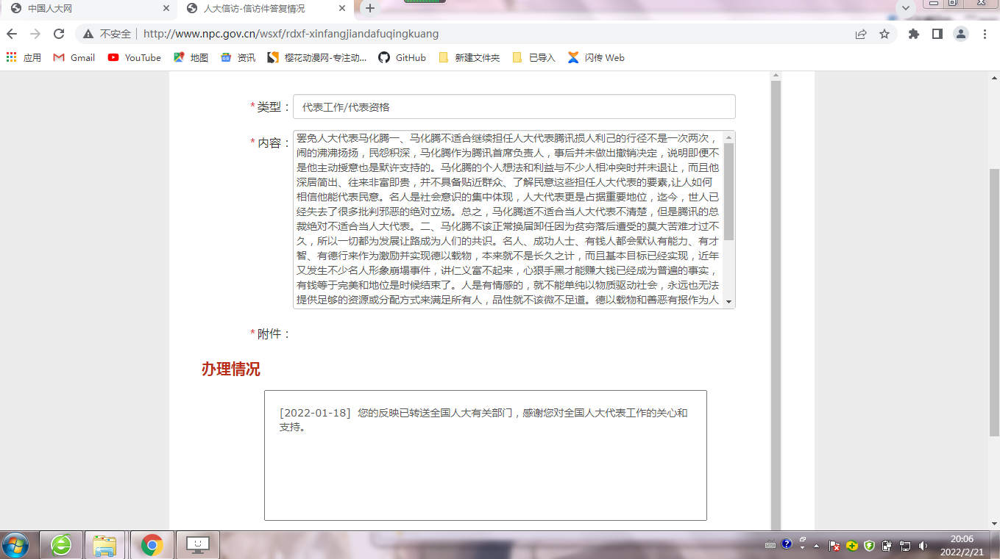

使用结构字的人讲究规矩推崇大局，使用组合字的人追求自由注重细节； 细腻的饮食习惯使人接受长相厮守的平淡，单调的营养摄入让人寻求激情浪漫的弥补； 以物质驱动的世界（万物为我所用）性格外向自我的人居多，注重精神追求的社会（强调自身的渺小丑恶）人们普遍内向谦卑。
一方水土养一方人，不同地域不同时间的人们可以构建出不同的社会意识体系框架。 宗教就是其中比较完整独立的社会意识体系，涵盖是非善恶，政治军事，生老病死，衣食住行方方面面， 编织出一张环环相扣精妙绝伦的网，身在其中，如鱼在水。 但是，没有人从哪来要到哪去的基础，无论多高明的体系都不过是人类的自圆其说的空中楼阁。
现在的世界，只不过是人类文明的一次探索尝试，当前的状态并非在条件限制下各个方面协调出来的最好结果。 唯物主义只能解决人从哪来，不能告知要到哪去； 膨胀的欲望可以推动社会快速进步，但资源和人的想象终究有限；空洞的人工环境，会限制人的可能性；私欲造成过多的内耗，拖慢了人类的进程。
失去存在的意义，所谓的正义和规则无法令人信服，一味地适应社会已经不再是真理了，取而代之的是驾驭意志。 善恶报应、德以载物以及爱情作为人与人之间复杂关系的结晶，也是所有大义的前提，三者的崩坏，从来都是社会（思想）变貌的契机。
即使可以飞得再高再远，又该去哪？人类倾向于群居，就需要规则，而且没到达文明的终点，人类需要创建意识体系作为齐心协力和目标导向的工具。（钥匙也已经找到了，空中楼阁的说法不会成为威胁。） 构建一个社会意识体系框架，不是几个人或者组织就可以有意识的完成的，试图监视和干涉一切无法长远，定义对错的权力已经重新回到了多数人手里。 爱情涉及生命的意义是普通人最容易重新制定核心规则，可以统领或影响一切。思想固化到载体中融入到生活环境，才能更好的发挥作用，婚礼仪式已经沦为了一场表演，如何举办婚礼是个人自由，围绕它展开的商业、人际、情感、对错会随之改变。
凝聚了无数的意志付出了巨大代价（啃树皮、易子而食、欺压、流亡、千里饿殍），实现了民以食为天这些经验教训能被广泛流传认可。 一件事无论高低好坏，成功失败，都需要有人去做，只要被人知道，都会使其对这个世界更了解一分，从而化为世界演变和完善的经验，才会有历史和今天。 也许一动不如一静，不过如果连减少轮回的代价都做不到的话，所有的一切都没有意义。
一、马化腾不适合继续担任人大代表
腾讯损人利己的行径不是一次两次，闹的沸沸扬扬，民怨积深，马化腾作为腾讯首席负责人，事后并没有做出撤销的决定，说明即便不是他主动授意也是默许支持的。马化腾个人想法和利益与不少人相冲突时，弃人大代表身份于不顾，而且此人深居简出，往来非富即贵，并不具备贴近群众、了解民意这些担任人大代表的要素,让人如何相信他能代表民意。名人是社会意识的集中体现，人大代表更是占据重要地位，马化腾是否适合当人大代表也许不好下结论，但腾讯的总裁绝对不适合。
二、马化腾不该正常换届卸任
因为贫穷落后遭受的莫大苦难才过不久，所以一切都为发展让路成为人们的共识。名人、成功人士、有钱人都会被贴上有能力、有才智、有德行的标签来作为激励并实现德以载物，本来就不是长久之计，而且基本目标已经实现，更重要的是心狠手黑才能赚大钱已经成为普遍事实为人共知，有钱等于完美和地位是时候结束了。
人是有情感的，就不能单纯以物质驱动社会，永远也无法提供足够的资源或分配方式来满足所有人，品性就不该微不足道。德以载物和善恶有报作为人与人之间复杂关系的完美结晶已经崩坏，人就很难长久保持内心平和，会有更多的社会矛盾激化。社会分工也不该永远局限于资源和能力智力，有些职位比起能力应该更看重品德。人们渴望变化，甚至不约而同的决定减少人口，德以配位是必需的，人大代表席位首当其冲。
唯物主义只能告知人从哪来，不能解决人到哪去。社会分工、赔钱买命、葬礼祭祀氛围差、信息时代个人直面整个世界，普通人存在的意义被极大地削弱，作为工具消耗品的属性不断增加，所有的是非好坏已成空中楼阁。生命的意义迟早会被重提，社会意识体系也会被重构，但是在此之前，人被意识支配还是人驾驭意志，世界是属于少数人还是人之所在即为世界。
罢免人大代表重要的是民意而非理由，现征集联名签字，邮箱收集heiyue000@outlook.com，纸质版处置运用自便。
